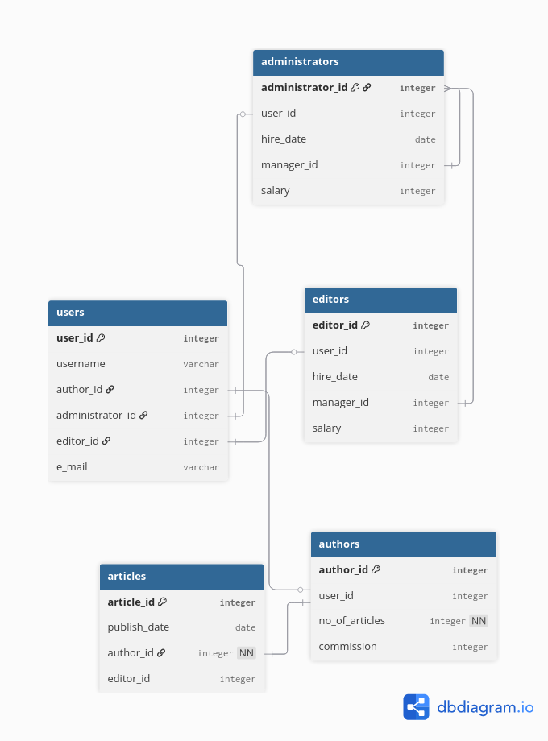
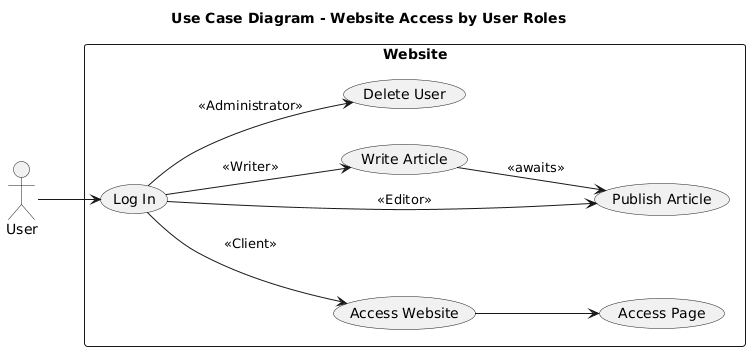

Cerințe proiect PHP
Descrierea generală a proiectului
Revista online va fi un website pe care se publică articole. Un utilizator va avea acces la vizionarea acestor articole doar după ce își va face un cont. Articolele pot fi editate de orice editor.
Angajații revistei online au roluri administrative și acces la funcții pe care un utilizator de tip client nu le are (editorii pot edita articole, administratorii pot adăuga și șterge alți utilizatori).
Autorii articolelor pot fi plătiți pentru articolele scrise, caz în care primesc un comision per numărul de cuvinte scrise, sau le pot posta gratuit.
Tipurile de utilizatori și privilegii
- Client - are acces la articole, putând să le citească
- Editor - poate aduce modificări, publica și șterge articole
- Autor - poate edita articolele pe care le-a scris
- Administrator - poate adăuga și șterge utilizatori
Entități și tabele
1. Tabela users
- user_id integer(cheie primară) - un identificator unic pentru fiecare utilizator.
- username varchar - numele de utilizator
- author_id integer (cheie străină către tabela authors) - id-ul de autor, dacă utilizatorul este și autorul unuia sau mai multor articole. Altfel, coloana este NULL.
- editor_id integer (cheie străină către tabela editors) - id-ul de editor, dacă utilizatorul este și editor. Altfel, coloana este NULL .
- administrator_id integer (cheie străină către tabela administrators) - id-ul de administrator, dacă utilizatorul este și editor. Altfel, coloana este NULL.
- e_mail varchar - email-ul asociat utilizatorului
2. Tabela editors
- editor_id integer (cheie primară)
- user_id integer(cheie străină care face legătura cu tabela users)
- hire_date date - data la care a fost angajat editorul.
- manager_id integer (cheie străină către tabela administrators) - managerul editorului.
- salary integer - salariul editorului.
3. Tabela authors
- author_id integer (cheie primară) - id-ul de autor.
- user_id integer (cheie străină care face legătura cu tabela
users)
- no_of_articles integer - numărul de articole ale unui autor
- commission integer - plata per cuvânt pentru un articol. Poate fi NULL, caz în care autorul scrie articole pro bono.
4. Tabela administrators
- administrator_id integer (cheie primară)
- user_id integer (cheie străină care face legătura cu tabela
users)
- hire_date date - data la care administratorul a fost angajat.
- manager_id - id-ul administratorului care se ocupă de acel utilizator (face parte din tabela administrators).
- salary int - salariul administratorului.
5. Tabela articles
- article_id integer (cheie primară)
- publish_date date - data publicării articolului
- author_id integer (cheie străină către tabela
authors) - id-ul autorului care a scris articolul.
- editor_id integer (cheie străină către tabela
editors) - id-ul editorului care a publicat articolul.

Descrierea soluției de implementare
Diagrama următoare arată pașii pe care îi parcurge un utilizator.

Serverul servește unui utilizator pagina de logare. Dacă acesta nu are cont, îl trimite către pagina de creare de cont. Dacă acesta are cont, se poate înregistra, moment în care serverul îl va redirecționa către pagina principală. De acolo un utilizator poate să citească diverse articole. Dacă cineva se înregistrează ca autor, el va avea acces la un buton de publicare de articol. Dacă apasă pe el, serverul îi va cere să încarce un fișier text. Editorii au acces la o pagină separată care conține o listă de articole care așteaptă review, din care pot alege un articol pentru modificare sau publicare. Administratorii au acces la o pagină separată pentru a vedea utilizatorii. Un administrator poate alege să șteargă un utilizator sau să îi modifice diverse atribute (rolul, salariul etc.).